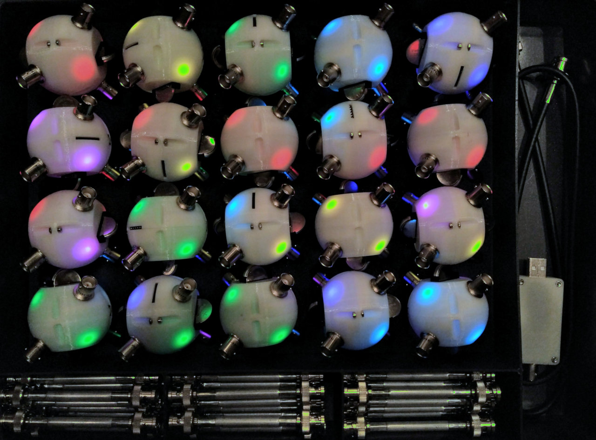
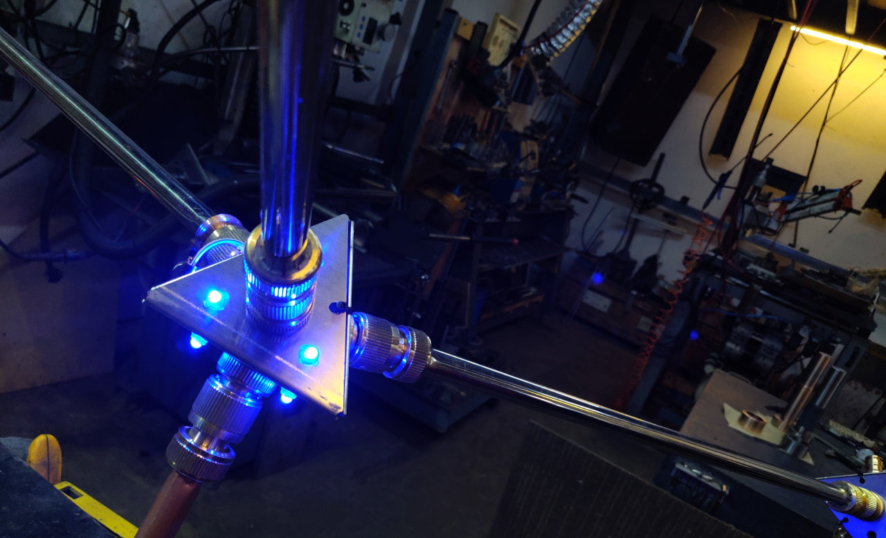
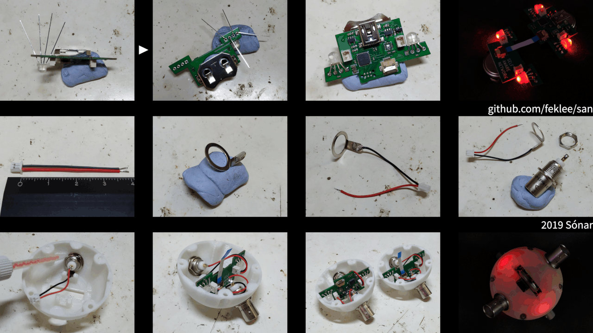

SAN: Buckyball Summer Camp at PACEE Lab
Table of Contents
1 Introduction
SAN is an experiment about the future of architecture. It is comprised of a system for building structures that interact with the environment. Eventually structures will be able to adapt to the environment. This solves the housing problem: Architecture moves to where it is needed.
For the summer camp, we will work with a life-size version of the desktop system, see below.
This document is a proposal and thereby subject to change.
2 Desktop system
Specs:
- Node diameter: 50 mm
- Edge length: 100 mm
- Power source: 2 × CR2032 coin cells per node
- Types of connectors: BNC
- Node material: PLA
- Edge material: aluminum
- Microcontroller: 1 ATMega328p 16Mhz per node (Arduino compatible)
- Computer interface: web app written in JavaScript / Node.js / WebGl / Web Audio / genetic algorithm
- Low level communication protocol: MultiTrans

Figure 1: Complete set

Figure 2: Dodecahedron built by two little girls at the end of Maker Faire Rome. Notice the visualization in the background: The structure understands how it is assembled.

Figure 3: Web app
3 Live-size system
Specs: (under development, subject to change)
- Node diameter: 200 mm
- Edge length: 400 mm
- Types of connectors: quick-connect
- Node material: PLA
- Edge material: PVC
- Power source: 4 × AAA battery per node
Other specs match those of the desktop system.

Figure 4: Prototype made out of metal (half a meter arm length)
4 Past events
- Maker Faire Berlin 2018
- Maker Faire Rome 2018, with talk about genetic algorithms
- Maker to Market Bootcamp Bilbao 2018 (one out of six projects from EU countries), plus Maker Faire Bilbao
Sónar Hong Kong 2019: soldering workshop about an architectural structure that makes sound, targeted at professional musicians and architects

Figure 5: Instructions for Sónar (desktop version)
SteamHead workshop for students, April 2019
5 Buckyball Summer Camp (three to five days in total)
One summer camp day is six hours long.
5.1 Fabrication of the elements (two to three days)
Each participant fabricates one node and two connectors.
- Nodes:
- 3D print shells
- solder PCBs that go inside of the nodes
- assemble nodes (glue, screws)
- program PCBs
- Edges:
- cut pipes to correct length (pipe cutter)
- solder cables to connectors
- assemble (glue, screws)
We will learn:
- How to operate a 3D printer
- How to solder a PCB
- How to work with hand tools for construction
- What goes into an electro mechanical product
5.2 Construction (one to two days)
Participants join their nodes and connectors, for a collaborative experience.
- Build structures
- Test structures
- Investigate structures using the web app
- Investigate how the nodes communicate
- Theory of tetrahedral symmetry in nature (diamond structure, SP3 hybridization)
- Theory of the buckyball (requires 60 nodes, so unlikely we will be able to build one)
We will learn:
- Spatial thinking: real structure vs. structure on screen
- Geometry in nature and architecture
- The math of 3D space
- What is a communication protocol
- What is an adjacency matrix
5.3 Music (optional, about half a day)
Each node functions as a module in a modular synthesizer. We create experimental music.
- Introduction to modular synthesis
- Think about structures in terms of the sound they represent
- Connect with a phone app to your node, and change the properties of the associated audio module
We will learn:
- Thinking outside of the box
- Basics of how a modular synthesizer works
5.4 Conclusion (about half a day)
Together we will think about the future of architecture: How could structures look that adapt to the environment and to the needs of the people?
We will learn:
- How to brainstorm
- The role of architecture in the context of society
At the end, each participant takes home the node and the edges he built. This encourages participants to connect with others after the workshop.
6 Target audience
Children ages twelve and up. Prior knowledge is not required, but it is of course helpful.
7 Tools
- 3D printers (one per participant would be ideal)
- soldering irons
- various hand tools, such as screw drivers and pipe cutters
8 Material
- Filament for 3D printing
- Electronic parts
- PCBs
- Quick-connect connectors
- Mechanical parts
9 Preparation
- Order materials
- Design PCBs (based on current small design)
- Order PCBs
10 Tutor
Felix is a programmer and artist from Berlin. His academic background is architecture and physics (Universities of Hannover and Konstanz, Germany, 1997–2004). Felix investigates structures that bridge the real and the virtual. With a partner he runs a small art production company, the Rieger & Klee GbR. At the art-science gallery Spektrum, Felix organizes MetaMatter, “a laboratory of research and practice focused on the transformations of matter.”